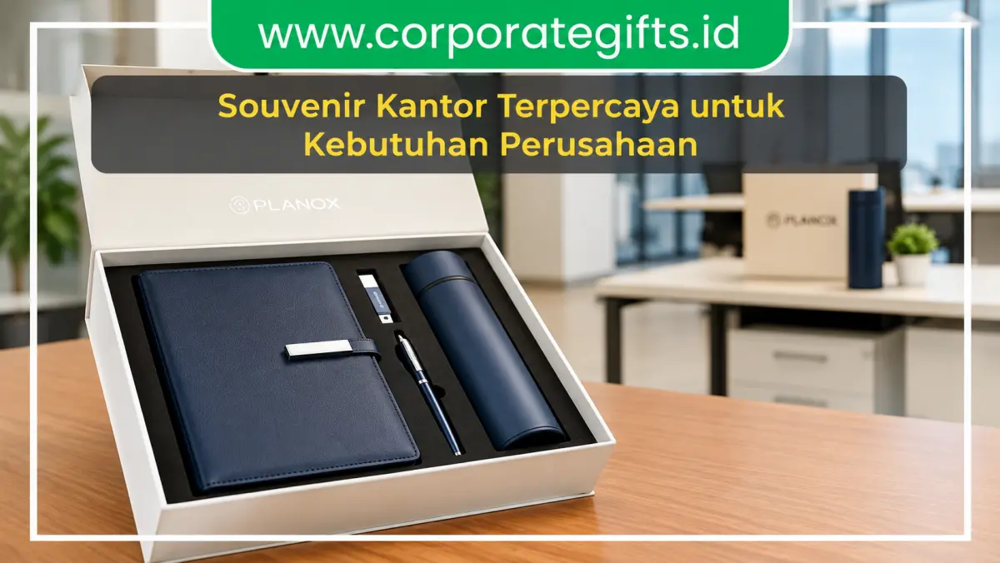

Corporate Gifts ID - Vendor souvenir kantor adalah mitra penyedia produk merchandise promosi dan corporate gift profesional yang membantu perusahaan memperkuat brand equity, mengapresiasi loyalitas karyawan, serta mempererat kemitraan bisnis melalui bingkisan fungsional berkelas. Mengingat souvenir kantor merupakan representasi nyata dari standar mutu korporasi, memilih produsen yang memiliki kredibilitas tinggi, kapasitas produksi stabil, dan transparansi legalitas B2B menjadi keputusan strategis yang menentukan keberhasilan kampanye branding perusahaan Anda.
Poin Kunci Seleksi Vendor Souvenir Kantor:
- Investasi Persepsi Brand: Souvenir berkualitas tinggi membangun kesan prestisius dan memperpanjang ingatan positif klien terhadap institusi Anda.
- Layanan Kustomisasi Penuh: Didukung berbagai teknik branding presisi mulai dari laser engraving, deboss kulit, hingga UV print full color.
- Standar Administrasi Resmi: Vendor B2B teruji menyediakan kelengkapan faktur pajak resmi, SPK tertulis, dan garansi penggantian cacat produksi.
- Kapasitas & Lead Time Terukur: Memiliki fleksibilitas kuantitas pesanan dari puluhan paket VIP hingga ribuan unit merchandise massal.
Peran Strategis Vendor Souvenir Kantor bagi Citra Korporat
Dalam lanskap bisnis yang kian kompetitif, keunggulan produk dan layanan harus diimbangi dengan strategi penguatan hubungan relasional. Di sinilah souvenir kantor memainkan peranan krusial sebagai instrumen komunikasi taktis:
- Media Promosi Berulang Berbiaya Nol: Item fungsional seperti tumbler stainless custom atau notebook agenda kulit yang dipakai harian di ruang rapat otomatis mempromosikan brand Anda secara organik.
- Pengungkit Employee Engagement: Memberikan paket onboarding kit atau reward milestone yang dirancang apik menumbuhkan rasa bangga dan kepemilikan karyawan terhadap perusahaan.
- Simbol Apresiasi Kemitraan Eksekutif: Penyerahan executive gift box saat momen perayaan tahunan atau penandatanganan MoU menegaskan komitmen kerja sama jangka panjang.
Daftar 10 Vendor Souvenir Kantor Terpercaya di Indonesia
Berikut rangkuman profil 10 penyedia souvenir kantor dan merchandise korporat yang terbukti memiliki standar produksi prima, layanan responsif, dan reputasi terpercaya:
1. CorporateGifts ID
Dikenal sebagai vendor spesialis pengadaan B2B skala menengah hingga enterprise multinasional, CorporateGifts.ID menghadirkan kurasi produk dengan cita rasa mewah dan elegan. Mulai dari paket souvenir custom VIP, set alat tulis eksekutif, hingga gift box bespoke, seluruhnya dapat disesuaikan dengan identitas brand secara presisi. Layanan mencakup konsultasi desain gratis, sampel mockup fisik, dan faktur pajak resmi.
2. Souvenir Atlasindo
Atlasindo merupakan pemain berpengalaman yang banyak dipercaya oleh kementerian dan instansi pemerintah. Keunggulan mereka terletak pada pengadaan cinderamata seremonial bertema formal kenegaraan dan kemampuan menangani pesanan volume masif dengan waktu pengerjaan yang ketat.
3. MySouvenir Indonesia
Menggabungkan sentuhan artistik dengan fungsi praktis harian, vendor ini sangat diminati perusahaan rintisan (startup) dan institusi pendidikan. Produk unggulannya mencakup tote bag kanvas premium, pouch organizer, dan mug keramik kustom.
4. Kadoin
Berbasis di Jakarta Selatan, Kadoin mengusung pendekatan gifting as a branding strategy. Mereka berfokus pada kurasi item estetis yang memiliki daya pikat visual tinggi untuk kebutuhan media kit, press gathering, dan paket sambutan karyawan baru (welcome kit).

Penerapan teknologi cetak modern dan quality control ketat menjamin hasil branding logo pada souvenir tampil tajam dan tahan lama.
5. Souvenirku Bandung
Vendor ini unggul dalam memadukan kearifan lokal seperti motif batik, kotak kayu ukir, dan anyaman dengan standar produksi massal modern. Sering menjadi mitra andalan bagi BUMN perbankan dan industri pariwisata.
6. R-Project Souvenir
Menawarkan solusi cinderamata bertema modern, minimalis, dan teknologi. Klien mereka banyak berasal dari sektor fintech, e-commerce, dan software house. Produk favoritnya meliputi kalender meja interaktif, smart tumbler sensor suhu LED, dan desk organizer kayu.
7. House of Gift
Mengusung komitmen keberlanjutan (sustainability), vendor ini fokus pada lini produk ramah lingkungan (eco-friendly) seperti peralatan makan bambu alami, botol kaca borosilikat daur ulang, serta kemasan kertas kraft bersertifikasi bebas plastik.
8. Souvenir Express
Memiliki sistem katalog digital terpadu dan proses order cepat, cocok untuk perusahaan yang membutuhkan barang promosi dalam waktu mendesak. Produk populernya mencakup pulpen stylus, flashdisk kartu custom, dan lanyard promosi.
9. TigaSatu Creative Gift
Berfokus pada lini produk eksklusif seperti leather goods, plakat kristal optik, dan jam meja marmer. Kerap dipilih oleh firma hukum, kantor akuntan publik, dan korporasi keuangan untuk cinderamata dewan direksi dan komisaris.
10. SeminarKits ID
Spesialis perlengkapan konferensi dan lokakarya yang menawarkan fleksibilitas produksi tinggi. Produk andalannya meliputi paket goodie bag lengkap, speaker bluetooth mini, dan headphone wireless custom logo.
Tabel Matriks Komparasi Vendor & Karakteristik Layanan
Berikut perbandingan profil keunggulan, spesialisasi produk, dan target audiens dari masing-masing penyedia:
| Nama Vendor | Kekuatan Utama | Kategori Produk Unggulan | Target Segmen Ideal |
|---|---|---|---|
| CorporateGifts ID | Kurasi B2B premium, kustomisasi logo presisi, faktur pajak resmi | Executive Gift Box, Tumbler SUS304, Agenda Kulit, Welcome Kit | Korporasi Menengah, Enterprise, BUMN, Universitas |
| Souvenir Atlasindo | Kapasitas produksi masif, spesialis acara kedinasan | Plakat Seremonial, Pin Kuningan, Tas Diklat Instansi | Kementerian, Lembaga Negara, Panitia Diklat |
| MySouvenir Indonesia | Desain artistik, produk fungsional kreatif | Tote Bag Kanvas, Pouch Kulit Sintetis, Keramik Custom | Startup, Institusi Edukasi, Komunitas Kreatif |
| Kadoin | Konsep hadiah tematik untuk aktivasi merek | Press Kit, Onboarding Box, Merchandise Launching | Agensi Periklanan, Korporat Digital, FMCG |
| Souvenirku Bandung | Perpaduan kerajinan lokal dan standar industri | Batik Eksklusif, Kotak Kayu Ukir, Besek Modern | Sektor Pariwisata, BUMN Perbankan, BUMD |
| R-Project Souvenir | Estetika clean minimalis dan gadget modern | Smart Drinkware, Desk Organizer, Kalender Estetik | Perusahaan Teknologi, Fintech, E-Commerce |
| House of Gift | Material ramah lingkungan bersertifikasi ESG | Stationery Bambu, Botol Daur Ulang, Eco Kit | Perusahaan Berkelanjutan, LSM, Green Enterprise |
| Souvenir Express | Kecepatan respon dan pengiriman kilat | Flashdisk Logam, Pulpen Promosi, Lanyard Massal | Penyelenggara Event Mendadak, Pameran Dagang |
| TigaSatu Creative Gift | Material mewah level eksekutif | Genuine Leather Set, Plakat Kristal Optik, Jam Meja | Firma Hukum, Kantor Direksi, Klien Prioritas |
| SeminarKits ID | Spesialisasi seminar kit dan gadget portabel | Goodie Bag Event, Headphone Custom, Audio Gadget | Event Organizer, Konferensi Asosiasi, Workshop |
Mengapa Seleksi Vendor Souvenir Kantor Tidak Boleh Sembarangan?
Souvenir kantor bertindak sebagai duta fisik perusahaan di meja kerja klien. Menyerahkan barang yang mudah rusak, berbau cat menyengat, atau berlogo buram akan langsung merusak reputasi profesional yang telah dibangun bertahun-tahun.
Vendor yang profesional dan berpengalaman umumnya memberikan standar jaminan komprehensif:
- Validasi Sampel Dummy Fisik: Memberikan kesempatan bagi tim pengadaan untuk memeriksa bobot, finishing, dan kerapian kemasan sebelum produksi massal.
- Konsultasi Spesifikasi & Anggaran: Membantu menyesuaikan pilihan material agar mendapatkan rasio nilai manfaat (value-for-money) tertinggi.
- Jaminan Garansi Produk: Bersedia mengganti unit yang cacat cetak atau rusak saat proses pengiriman tanpa biaya tambahan.
- Kejelasan Timeline SPK: Memiliki komitmen jadwal pengiriman yang dituangkan dalam surat perjanjian kerja resmi.
6 Tips Taktis Memaksimalkan Pengadaan Souvenir Kantor
Untuk memastikan anggaran cinderamata perusahaan terserap optimal dan menghasilkan dampak branding yang nyata, terapkan langkah-langkah berikut:
- Pahami Profil & Kebutuhan Penerima: Bedakan antara cinderamata untuk nasabah prioritas, tamu pameran massal, dan karyawan internal.
- Prioritaskan Daya Guna Jangka Panjang: Pilih produk yang relevan dengan rutinitas kerja harian agar memiliki usia pakai bertahun-tahun.
- Terapkan Teknik Subtle Branding: Peletakan logo perusahaan yang proporsional, rapi, dan elegan jauh lebih disukai dibandingkan logo berukuran raksasa yang mencolok.
- Manfaatkan Efisiensi Skala Pemesanan: Konsolidasikan kebutuhan souvenir beberapa departemen atau event dalam satu kali pemesanan (bulk order) untuk menekan biaya per unit.
- Siapkan File Vektor Master: Sediakan file logo dalam format resolusi tinggi (AI, EPS, atau PDF Vector) dengan kode warna Pantone/CMYK resmi.
- Lakukan Pemesanan Jauh-Jauh Hari: Hindari pemesanan mepet mendekati hari-H agar proses quality control dan pengemasan berjalan optimal tanpa risiko kendala logistik.
Pertanyaan Seputar Vendor Souvenir Kantor (FAQ)
Kesimpulan dan Rekomendasi Solusi Pengadaan
Memilih vendor souvenir kantor yang kredibel adalah fondasi utama dalam menciptakan cinderamata korporat yang berdampak nyata. Dengan memadukan kurasi produk bermutu tinggi, ketepatan waktu pengiriman, dan pelayanan B2B bergaransi resmi, souvenir perusahaan Anda akan menjadi instrumen branding yang membanggakan.
Percayakan pengadaan corporate gift dan cinderamata kantor Anda bersama CorporateGifts.ID. Temukan aneka pilihan merchandise berkualitas melalui katalog produk resmi kami atau ajukan estimasi anggaran melalui formulir permintaan penawaran resmi.